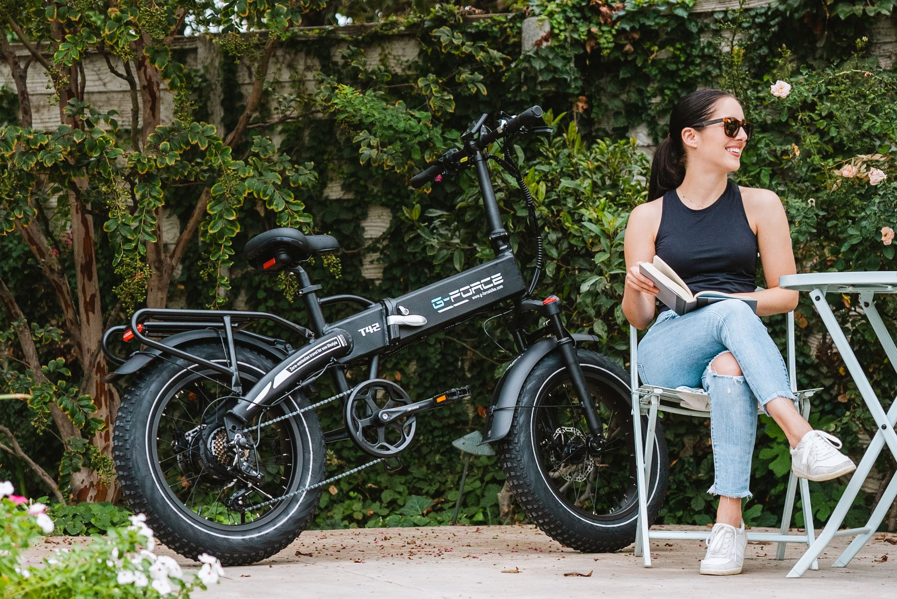

폴더블폰 '티타늄 합금 필름' 주목…삼성 갤럭시Z 소재 혁신

삼성전자가 오는 언팩 행사에서 공개 예정인 갤럭시Z 시리즈 신모델에 '플렉스 티타늄' 기술을 전면 도입한다고 밝혔다. 이 기술의 핵심은 OLED 패널 하단에 들어가던 기존 폴리머(플라스틱) 필름을 특수 티타늄 합금 필름으로 교체하는 것이다. 삼성이 7세대에 걸쳐 쌓아온 폴더블 개발 경험을 바탕으로 디스플레이 구조와 소재를 전면 재설계한 결과물이다.
플렉스 티타늄 필름의 물리적 특성은 기존 폴리머 필름을 압도한다. 삼성전자에 따르면 이 티타늄 합금 필름은 폴리머 대비 약 20배 높은 강성(굽힘 저항력)을 자랑한다. 두께는 사람 머리카락 굵기(약 70마이크로미터) 수준으로, 초정밀 압연 공정을 통해 제작된다. 반복적으로 접히는 힌지 부분에 적용돼 내구성과 복원력을 동시에 확보했다.
티타늄은 높은 강성과 탄성을 갖춘 소재지만, 반복적으로 접히는 폴더블 디스플레이에 적용하기 어렵다는 것이 업계의 통념이었다. 삼성은 이를 티타늄 합금 조성 최적화와 극박(極薄) 압연 공정 혁신으로 극복했다. 합금 내 알루미늄·바나듐 등 첨가 원소의 비율을 정밀하게 조정해 반복 굽힘에서도 크랙이 발생하지 않는 미세구조를 구현했다고 알려졌다.
이번 기술 도입의 가장 가시적인 효과는 폴더블폰의 고질적 문제였던 '주름(크리즈)' 감소다. 플리카부분의 강성이 높아지면서 OLED 패널이 펼쳐졌을 때 화면 중앙의 주름이 눈에 띄게 줄어든다. 폴더블폰 구매를 망설이게 했던 가장 큰 요인 중 하나가 해소되는 셈으로, 소비자 만족도 향상과 함께 시장 확대 효과가 기대된다.
소재 공급망 측면에서 티타늄 합금 필름의 주요 수요 증가가 예상된다. 티타늄 금속의 글로벌 생산량은 연간 약 25만 톤으로, 러시아·중국·일본이 3대 생산국이다. 그러나 지정학적 리스크로 인해 러시아산 티타늄 조달에 어려움이 생기면서, 일본·한국·미국 등으로 공급선 다변화가 진행되고 있다. 폴더블폰 확산으로 고순도 티타늄 합금 수요가 늘면 공급망 재편이 더욱 가속될 전망이다.
경쟁사인 애플도 폴더블 기기 출시를 준비 중인 것으로 알려져 업계 관심이 집중되고 있다. 업계에서는 애플이 폴더블 아이폰에 어떤 소재를 적용할지, 특히 디스플레이 하단 구조 소재로 티타늄을 채택할지 여부가 향후 티타늄 합금 필름 시장 규모를 결정하는 핵심 변수가 될 것이라고 보고 있다.
국내 소재·부품 업계에도 기회가 열리고 있다. 포스코는 이미 항공·의료용 티타늄 소재 개발 역량을 보유하고 있으며, 전자소재용 극박 티타늄 합금 제품 라인업 확대를 검토 중인 것으로 알려졌다. 중소 압연 전문 기업들도 초정밀 티타늄 박막 공정 기술 개발에 뛰어들고 있어, 관련 밸류체인이 형성되는 과정에 있다.
디스플레이 소재 전문가는 '티타늄 합금 필름은 단순한 부품 교체가 아니라 폴더블 디스플레이 소재 패러다임의 전환을 의미한다'며 '향후 롤러블·슬라이더블 등 다양한 폼팩터 디스플레이에도 적용이 확대될 것'이라고 전망했다. 이는 티타늄 가공 소재의 전자 산업 내 위상이 높아지는 신호탄으로 해석된다.
글로벌 티타늄 합금 소재 시장은 항공·우주 분야가 전통적 주수요처였으나, 전자 소재 분야의 비중이 빠르게 늘고 있다. 시장조사업체 마켓앤마켓에 따르면 전자 기기용 티타늄 합금 소재 시장은 2025~2030년 사이 연평균 15%의 성장률을 기록할 것으로 예측된다. 폴더블 기기의 보급 확대가 주요 성장 동력이다.
정부 차원에서도 티타늄을 포함한 희귀·전략금속의 국내 가공 역량 강화에 관심이 높아지고 있다. 산업부는 핵심광물 전략 비축 및 가공 기술 개발 예산을 확대하면서, 티타늄·니오브 등 전자 소재용 금속의 국산화율 제고를 목표로 삼고 있다. 삼성의 이번 기술 도입이 정부 정책과 시너지를 일으킬 가능성이 있다.
향후 시장 전망을 보면, 폴더블폰 글로벌 출하량은 2025년 2,000만 대 수준에서 2027년 5,000만 대 이상으로 급증할 것으로 예상된다. 이에 따라 폴더블 디스플레이용 티타늄 합금 필름 수요도 빠르게 확대될 것이다. 소재·부품 기업들로서는 이 시장에 선제적으로 진입하는 것이 중장기 성장을 담보하는 전략적 선택이 될 수 있다.